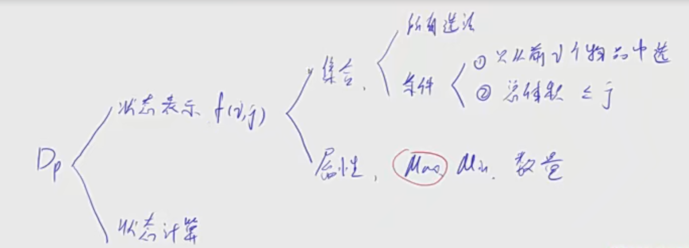
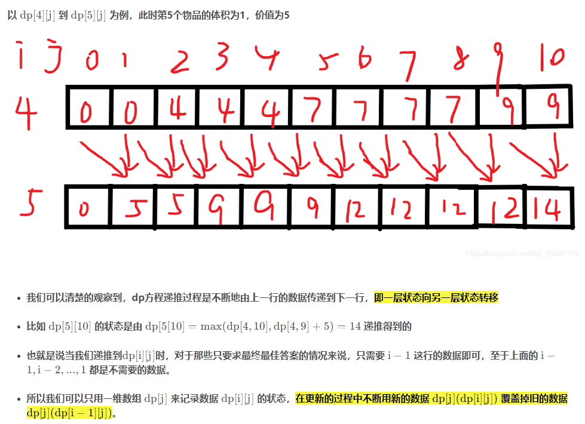
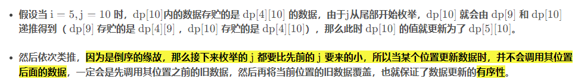
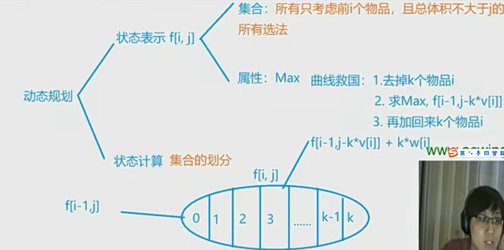
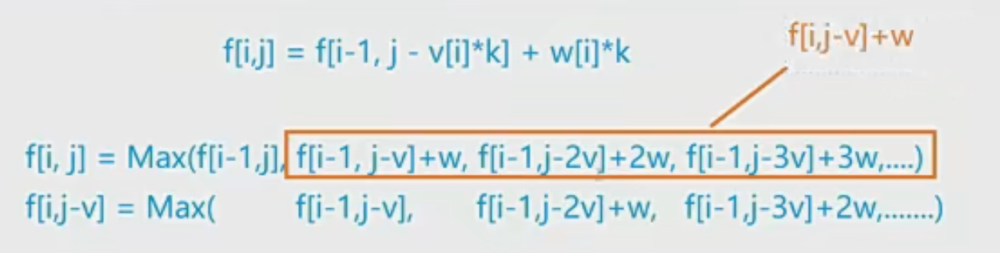

0. 综述
DP问题，是基础算法中比较难的部分，因为它不像其他算法，有个代码模板可以用于记忆。DP问题更偏向于数学问题，它没有一套代码模板，但是有一种思考方式。遇到DP问题，通常我们可以从2个方面进行思考：
-
状态表示
- 考虑是一维还是二维（f[i] 或者 f[i][j]）
- 考虑这个状态表示的是哪些集合
- 考虑f[i][j]的值，代表的是这个集合的什么属性
-
状态计算（状态转移方程）
- DP问题最难的点就在于状态转移（对集合进行划分），即需要自己去想，某个状态，如何从其他的状态转移过来。这个没有固定套路，只能多练，形成经验。DP问题通常都是从实际问题抽象来的，针对某一种DP问题，只要尝试并发现某种状态转移的方式是可行的，是能求出最终解的，那么形成经验后，再遇到该类DP问题，便能更快的解决。
1. 背包问题
1.1 01背包
N个物品，每一个物品的体积为 $ v_i $ ，价值为 $ w_i $， 背包的总体积为V， 每一件物品只能用一次（所以叫01背包）。
输入：第一行两个数字，分别是物品数量N和背包容量 V
往后依次输入每个物品的体积和价值。
输出：背包中物品的最大价值。
e.g.
1 | 4 5 |
答案其实比较显而易见，就是把2 3放进去，总价值为8.
Dp问题:
- 状态表示：思考需要用几维的状态来表示，比如这个问题，就是
体积和重量两个维度，也就是f(i, j) - 状态计算：如何把每一步状态算出来
Dp优化：一般来说都是对 代码 或者 方程 做等价变形。
考虑和实现不一样，考虑的时候，可以从朴素的角度来考虑，比如数组的二维和一维表示。
f(i, j) : 集合与属性
属性包括：最大值、最小值、数量
集合表示对于物品的所有选法
条件是：只从前i个物品中选，选出来的总体积小于j


f(i, j)这个集合，划分为更小的最优解集合，使得这个f(i, j)可以由更小的集合计算出来。划分的方案是：
- 包含
i和不包含i两种方式- 不包含
i: 可以简化为f(i-1, j) - 包含
i: 所有情况里面减去i，也就是：f(i-1, j- v_i)，然后再加上 w_i就完了。这里有一个很关键的理解就是：加上或者减去i，谁是最大谁是最小都不会有变化，只是说最后加上这个w_i而已。 注意这里有一个前提，就是在遍历的时候，j必须≥v[i] , 因为后面j会减去v[i] ，否则会变成负数。
- 不包含
- 不漏掉任何一种情况 （Core）
计算公式：
$$
f(i, j) = max[f(i-1, j), (f(i-1, j-v_i)+w_i)]
$$
这个思考方式也是动态规划问题思考的基石。
dp问题没有模板，更多是一种思想，没有固定的代码模板。
上面那道题的题解：
1 | int main(){ |
1.1.1 01背包问题的一维优化
我们分析f(i,j)，它在计算不包括i的情况的时候，只用到了f(i-1, j)，剩下的f(i-2, j)这些layer都没有用到，那其实这里就可以优化。可以使用滚动数组来做。
1.1.2 滚动数组的思想
- 滚动数组是一种能够在动态规划中降低空间复杂度的方法，有时某些二维dp方程可以直接降阶到一维，在某些题目中甚至可以降低时间复杂度，是一种极为巧妙的思想。
- 简要来说就是通过观察dp方程来判断需要使用哪些数据，可以抛弃哪些数据，一旦找到关系，就可以用新的数据不断覆盖旧的数据量来减少空间的使用。


在理解滚动数组的时候，还是要以一种纵向的思想去思考这个问题。
在计算f(1)的时候，这一行会用到f(0)这一行；
而计算f(2)的时候，其实用到的是f(0)和f(1)来计算。
维度被循环掩盖了。


1.1.3 一维优化实现
1 | int f[N]; |
1.2 完全背包
每件物品有无限个


基本的假设是：第i个物品选了k件。前面的不用管，因为你现在都这样假设了，那在之前的情况中也是一样的，所以只用假设当前情况就可以了
其中，f[i-1, j]可以被看做是k为0的情况。
状态转移方程：
$$
f(i, j) = f(i-1, j-k×v_i) + w_i×k
$$
1.2.1 基本实现
1 | for(int i = 1; i<=n; i++){ |
1.2.2 优化为二维


所以优化下来，就不用与那个k有关系了：
$$
f(i, j) = max(f(i-1, j), f(i, j-v_i) + w_i)
$$
具体实现：
1 | for(int i = 1; i<=n; i++){ |
这个公式，仅仅相当于01背包：原来是从i-1层转移的，现在从i层转移。
- 01 背包：从
i-1层转移，仅仅是单纯的考虑拿或者不拿这个第i个物品 - 完全背包：从
i层转移，其实是针对拿k个的优化方案。
这个优化方案（思路）十分重要，在数学中，跟数列是一个意思，只有亲手通过数列推导，并且注意书面对其，才容易发现其中的规律，进而进行简化。
1.3 多重背包
每件物品有 $ s_i $ 个
1.4 分组背包
有N个组，每一组的背包只能选一种物品
2. 线性DP
状态转移方程呈现出一种线性的递推形式的DP，我们将其称为线性DP。
从顶部出发，在每一结点可以选择移动到其左下方的结点或移动至其右下方的结点，一直走到底层，要求找出一条路径，使路径上的数字的和最大。
三角形一共有n层，在第i层，共有i个数字，可以用a[i][j]来表示三角形中的第i行的第j列（其中j <= i），对于某个位置[i,j]，设状态f[i][j]表示的集合是：从顶点到该点的全部路径；而f[i][j]的值，表示的是这个集合的什么属性呢？容易想到，自然是表示到达该点的全部路径中，数字和最大的那一条路径的数字和。
状态的表示思考完了，接下来是状态计算。由于每个点，都只能从其左上方的点，或右上方的点走过来。所以，我们可以对f[i][j]表示的集合进行划分，划分为2个子集合：从左上方的点过来的路径，从右上方的点过来的路径。
那么f[i][j] = max(f[i - 1][j - 1], f[i - 1][j]) + a[i][j]
这就是状态转移方程了（注意对每一层的第一个点和最后一个点，需要做一下特判，或者不用做特判，初始化f[i][j]时，多初始化一些位置即可）
给定一个长度为 N 的数列，求数值严格单调递增的子序列的长度最长是多少。
比如对于数列：3 1 2 1 8 5 6，严格单调递增的子序列，最长的是：1 2 5 6，其长度为4。
分析：
同样，先来分析状态表示，数列用a表示，某个下标i的元素，则用a[i]表示。
由于数列是一维的，则我们只需要一维的状态，即f[i]即可。那么f[i]表示的集合是什么呢？
我们用f[i]表示：所有以a[i]作为最后一个数的子序列。
f[i]的值是什么呢？是这些以a[i]作为最后一个数的子序列中，长度最大的子序列的长度。
接下来状态转移，对所有以a[i]作为最后一个数的子序列，可以如何进行划分呢？（集合划分）
我们可以考虑子序列的倒数第二个数，我们根据这些子序列中，倒数第二个数是a[i - 1]，a[i - 2]，a[i - 3]，…，a[0]，来进行划分。一共划分为i个子集合。则状态转移方程为：
$$ f[i] = max(f[j]) + 1，其中 j ∈ [ 0 , i − 1 ] j \in [0, i - 1]j∈[0,i−1] $$
当然，由于子序列需要是严格单调递增，所以并不是[0,i - 1]中的所有位置都可以作为倒数第二个位置。必须满足a[j] < a[i]，才行。
如果您喜欢此博客或发现它对您有用，则欢迎对此发表评论。 也欢迎您共享此博客，以便更多人可以参与。 如果博客中使用的图像侵犯了您的版权，请与作者联系以将其删除。 谢谢 ！